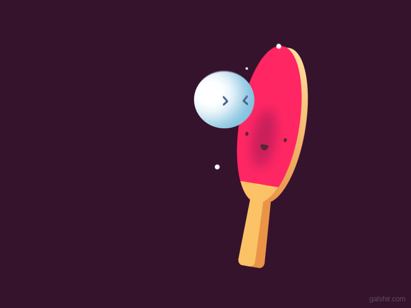

Signal Monitoring
Calibration
Single Player
Multiplayer Player

Signal Monitoring
In this section you will observe your brain activity being recorded from the EEG system! Please read the following instructions carefully before continuing:
- Make sure the connection status says Player 1 Headset Connected!
- When you click on Begin Signal Monitoring, a new window will show raw data being received from the headset in the top row and filtered EEG data in the bottom row
- Notice how the filtered EEG data looks smoother then the raw data. This is because of the high frequency noise is being removed using a bandpass filter (1-20Hz).
- It's also important to check the impedance levels of the electrodes to make sure they're getting good quality data
- Click on the "Channels" tab in the cognionics data acquisition window and make sure the eight electrodes on the bottom right-hand side of the screen are all green
- If one or more electrode channels are not solid green, try readjusting the individual electrodes on the EEG equipment and make sure they're all touching your head until the impedances turn green
- When all the electrodes are green on your impedance check, you can move on to the next step
- When you blink your eyes during an EEG recording, you'll notice a specific type of EEG activity happening in channels F3 and F4
- The type of activity that should be elicited from eye blinks is a positive spike
- Notice that the electrodes farther away from your eyes (i.e. P3, P4, O1, and O2) have a spike with a lower amplitude than that of electrodes F3 and F4
- Lastly, if you clench your teeth, or scrunch up your face like your angry, you'll notice a sudden change in EEG frequencies corresponding to this behavior
- Click Begin Signal Monitoring when ready!
- Once you've made sure the EEG is recording properly (your eyeblinks and clenched face activity is showing and your impedance check is all green) proceed to the Alpha Wave Calibration Stage

Alpha Wave Calibration
- Click the Start Calibration button
- Alpha activity is predominant in the occipital lobe. As a result, only channels O1, O2 and Pz will be displayed during this stage
- After you have clicked Start Calibration you will observe three windows, the first window shows your raw EEG signal, the second one shows the filtered alpha waves in O1, O2 and Pz and the last window shows your alpha power on the three channels.
- What you need to do is relax with your eyes open and make sure the "alpha power" signal is down at 0. When the alpha power is at 0, then close your eyes and the alpha power should increase to a value above 0 (have you partner help you out in determining what the alpha power is at)
- On the other screen, you should see EEG activity. When you close your eyes you will begin to see alpha activity (notice the large increase in amplitude when you close your eyes)
- If the alpha power is not reaching 0 when your eyes are open or if closing your eyes is not eliciting alpha rhythms, close both windows and change the values in the "Min Crop Value", "Max Crop Value", and "Offset" boxes
- The Min Crop Value controls the lower bound on the alpha power that is displayed and the Max Crop Value controls the upper bound
- The numbers you change to should be of a higher value than the number that is already on the screen.
- While varying the Min Crop Value and Max Crop Value ensure that the max value is higher than the min and that the difference is exactly 5 or 6. PLEASE NOTE: THE MIN CROP VALUE AND THE OFFSET VALUE MUST BE THE SAME NUMBERS
- After you change the values in the Min Crop Value, Max Crop Value, and Offset text boxes, close the three windows that had popped up and click Start Calibration again and repeat steps 3 and 4
- If you are still not seeing alpha power at 0 when your eyes are open and you are relaxed, and if the alpha power is not increasing when you are relaxed with closed eyes, repeat steps 5 and 6 until the desired result.
- When you have reached the desired result (relaxed open eyes yielding 0 power, and relaxed closed eyes yielding higher than 0 power) Note down the calibration values for your subject, you'll will need these for the tournament and also the next section
- When the alpha power values are working properly, you can move on to Single Player

Single Player
- Change the values in the Min Crop Value, Max Crop Value, and Offset text boxes to the values you inserted in Calibration and then click Start Game
- Ensure that your headset is connected
- How to play?
- Having your eyes opened and being relaxed causes the paddle to stay down
- Closing your eyes causes it to move up
- Player 1 is one the left side of the screen and AI/Player 2 is towards the right
- Wait for instructions from instructor/TA when done
- Click Start Game when ready. Have fun!
- Please note that there will be a lag between you closing your eyes and the bar responding. Use this to your advantage to determine where the paddle should be to hit the ball to beat your opponent

Multiplayer
- Player one should change their Min Crop Value, Max Crop Value, and Offset value to whichever numbers they inserted in the Calibration session
- Player two should change their Min Crop Value, Max Crop Value, and Offset value to whichever numbers they inserted in the Calibration session
- Ensure that both the headsets are connected
- How to play?
- Having your eyes opened and being relaxed causes the paddle to stay down
- Closing your eyes causes it to move up
- Player 1 is one the left side of the screen and Player 2 is towards the right
- First Player to reach 11 points wins. There are no tie-breakers
- Click Start Game when ready!
- Please note that there will be a lag between you closing your eyes and the bar responding. Use this to your advantage to determine where the paddle should be to hit the ball to beat your opponent